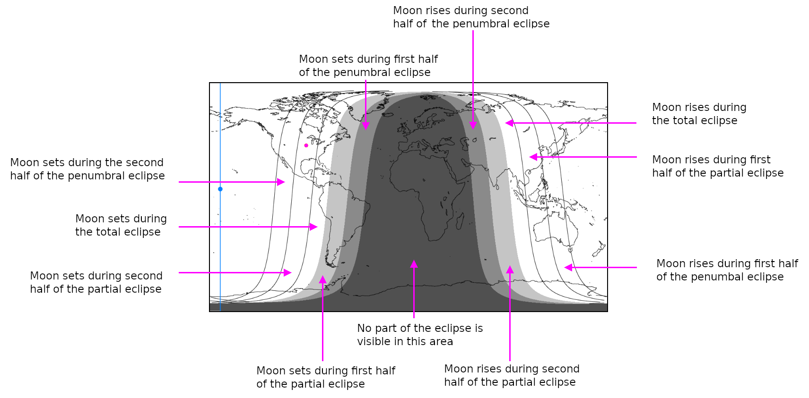

Orrery App Help
This app displays information about the positions of the Sun and planets, both in the sky and relative to each other. The app can produce thirteen displays, which can be selected using the three-dot menu in the upper right corner.
Planet Transits
The default display is the Planet Transits display, which shows the times of sunset and sunrise and twilight as well as the rising, transit, and setting times of the planets. The times of the four major Moon phases, new, 1st quarter, full, and last quarter are also shown. The display has two time axes. The vertical axis is time running from the current time (at the display’s bottom) upwards through the next year (at the display’s top).
The horizontal axis is the standard time (never daylight saving time) for a given day. The curved white line on the left side shows the time of sunset. The blue region to the left of that line shows the time of evening twilight. The white curve on the right-hand side shows the time of sunrise, with morning twilight shown to its left in blue, and the phase of the Moon shown to the right of the curve. The latitude, longitude, Universal Time, and Local Sidereal Time are shown above the graphic plot.
By default, the current time and the phone’s location are used to produce the display, but user-defined values can be entered using dialog boxes selectable in the three-dot menu. Horizontal gray lines are drawn between sunset and sunrise for day 1 of each month. If the current time is between sunset and sunrise, it is shown as a vertical gray line running through all displayed days.
The times of rising, transit, and setting are plotted between the sunset and sunrise curves. The colors used are: Mercury: gray, Venus: white, Mars: red, Jupiter: orange, Saturn: yellow, Uranus: blue-green, and Neptune: blue. The transit lines are bright, and the rising and setting lines are dimmer. Planet symbols are shown near the lines, with r, t, and s subscripts for rise, transit, and set.
The lines are only plotted for times between sunset and sunrise, so for most locations no transit lines for Mercury or Venus are plotted, and for those planets the rise and set lines are bright.
Planet Elevations
This display shows the elevation above the horizon for the Sun, Moon and planets. The UT is listed across the top, and the LST is listed across the bottom. Theo vertical lines show the time of sunset (left) and sunrise (right), along with blue shading for twilight. A horizontal line for each object shows the period of time during which the object is above the horizon. Tick marks on those lines show the elevation at 20 degree intervals, and a tick mark at the line's center shows the object's elevation at transit. A vertical line (gray before sunset, green after sunset) shows the current time, and during the time between sunset and sunrise the names of the objects that are currently visible are shown in green and the current elevation is shown at the intersection of the green current time line and the object's horizontal line.
For this display only, the display switches to the next day after the Sun rises.
Planet Compass
This display shows the current azimuth and elevation of the Sun, Moon and planets. The full circle on the upper right shows the azimuth of each object. Objects above the horizon are shown in white, and objects below the horizon are red. The lengths of the lines connecting the circle to the object's symbol are meaningless - different lengths are used merely to prevent the symbols from overlapping. The semicircle on the upper left shows the current elevation for each object.
Below the graphic figures is a table of the hour angle and rising, transit and setting times for all the plotted objects. Objects above the horizon are named with green text, and red otherwise. The time of the next event for each object is shown in white, and the other events are shown in gray.
Planet Phenomena
The planet phenomena page shows a table with the date and hour of certain events related to a planet's position in the sky. The table has two columns, The left column shows the time of the most recent occurance of the phenomenon, and the right column show when the phenomenon will next occur.
For the inferior planets (Mercury and Venus) the dates and hour of inferior confunction (when the object is directly in between the Sun and the Earth), maximum western elongation (from the Sun, with the anglular separation), superior conjunction (when the object is directly behind the Sun as seen from Earth) and maximum eastern elongation (with the angular separation) are shown. The maximum elongation times shown can be in error by up to three hours. These planets (especially Mercury) are most easily seen near greatest elongation.
For the superior planets (Mars, Jupiter, Saturn, Uranus and Neptune) the times of conjunction (when the Sun is between and planet and the Earth) and opposition (when the Earth is between the Sun and the planet) are listed. The planet is usually impossible to see near conjunction, and best seen near opposition.
Moon Calendar
The Moon Calendar shows the phase of the Moon for every day within a 21 month interval, centered on the current month. You can swipe right or left to move forward or backward in time. Blue Moons (the second Full Moon in a calendar month) are shown in cyan.
A yellow square is drawn around the current phase. All Full Moons are circled in red. Light gray shading is applied to the unilluminated portion of the Moon figure if earthshine might be visible. New Moons are shown in dark gray.
Lunar Eclipses
The Lunar Eclipse page will show you information about lunar eclipses within the time range of 1999 BC through 3000 AD. When you first select the page, you will be presented with a list of eclipses that occur during the current decade. The year range is listed near the top, and the "-" button moves you back one decade, and the "+" button move you forward one decade. Below the decade indicator is a set of buttons that allow you to select the type of eclipses that should appear in the list. By default Partial and Total eclipses are shown, but not wimpy, "Why did I stay up for this?" penumbral eclipses. You can also set a filter to show only eclipses that are visible from your location. The list can be quite long, so it is scrollable. Tap on the date of the eclipse you are interested, to produce the eclipse display.
The eclipse display provides information about the eclipse you selected. Below the date, the app tells you information about what portion of the eclipse is visible from your location. Below that line it tells you how many minutes of the various eclipse phases will be visible from your location.
Two diagrams are drawn on the display. The upper one shows the path of the Moon through the Earth's shadow. The umbra is dark gray, and the penumbra is light gray. Circles are drawn at different locations in the shadow, representing significant times within the eclipse. These times are labelled (with gray connecting arrows) above the diagram.
The lower diagram shows the regions on the Earth where different phases of the eclipse can be seen. In the region shaded dark gray, the eclipse is not visible at all. The region shaded in medium gray only gets to see a penumbral eclipse. The region shaged light gray gets to see a partial eclipse, and the unshaded region gets to see a total eclipse. The observer's location is shown by a red dot, and the place on the Earth where the midpoint of the eclipse happens with the Moon directly over head is shown by a blue dot.
The back button returns you to the eclipse selection list.
Jovian Moons
The Jovian Moons display shows the positions of the four Gailean Moons relative to Jupiter. The current configuration is shown at the top, and the positions throughout the current calendar month are shown below it. Gray lines are drawn at 00:00 UT for each day. The "Animate" button showns how the moons move thoughout the month.
The buttons on the lower right allow you to invert (north down, appropriate for Newtonian telescopes) or mirror reverse (appropriate for Schmidt Cassegrain or some refracting telescopes) the display, to match the view seen with your telescope.
Jovian Moon Events
The Jovian Moon Events display shows a table of the start and stop times for eclipses (moon goes into Jupiter's shadow), occultations (moon goes behind Jupiter), transits (moon passes in front of Jupiter) and shadow transits (the moon's shadow falls on Jupiter's cloud deck). Events for the current and next UT day are shown, so some of the events listed may have already occured; a check mark is shown after those events. Events for which Jupiter is above the horizon and the Sun is below the horizon are shown in green, except for the next one which is shown in red. Other events are shown in gray.
Analemma
The Analemma is a plot of the altitude of the Sun at transit, versus the Equation of Time for each day of the year. Its primary purpose is to confuse students looking at old globes. The value for the current time is shown with a dot marked “Now”.
Meteor Showers
The Meteor Showers page shows data for this year's periodic meteor shower events. The main utility of this page is that it looks at the Moon's position during the shower, and figures out whether of not the sky will be dark enough to see the meteors. It goes without saying that you should not look for meteors from within a light-polluted city, but if the Moon is over the horizon even that will greatly reduce the number of meterors you will see.
The Meteor Showers page shows information for all showers, the large majority of which are really minor events. Even when a meteor shower is not occurring, you can expect to see 4 to 10 meteors per hour. Many of the showers listed do not even double that background rate, and are of interest only to serious meteor enthusiasts. If you just want to go out and see some meteors for fun, it's best to select a shower with a rate of at least 50 meteors per hour, and to watch it on or very near the date of the shower's maximum.
The display shows a table, with one row per shower. The first column lists the name of the shower. The second column lists the peak rate of meteors per hour. The third column shows the date range over which the shower occurs, in DD/MM format. The fourth column shows the date of the shower's peak intensity. The fifth column shows the average velocity of the meteors; higher velocities mean brighter, bluer meteors. The sixth column shows what fraction of the Moon is illuminated by sunlight on the shower's peak night; a trailing + means the Moon is waxing, a - means the Moon is waining. The last column shows the number of dark hours (Sun and Moon both well below the horizon) on the shower's peak night.
Rows are printed in green if the listed shower is currently occuring. Bright green is used if the Moon is not interfering with shower viewing, dark green is used otherwise. Showers that are not currently occuring are listed in white if there will be more than 2 hours of darkness on the shower's peak night, and gray otherwise. The number of dark hours for the next or current night is shown at the bottom of the display.
Schematic Orrery
The schematic Orrery page shows the current position of the planets (and our Moon) relative to the Sun, as seen from above the Sun’s north pole, with the top of the display oriented towards the Vernal Equinox. Nothing is to scale, and the orbits are shown as ellipses. This display gives a rough idea of where solar system objects are at the moment. Buttons at the bottom of the page allow the planetary motions to be animated over a period of 1, 10, or 100 years.
The longer periods are animated more rapidly, so that all three animations run for about the same elapsed time. While animations are running, they can be stopped by pressing the STOP button. Pressing the Reset button returns the display to the initial time.
To-scale Orrery
The To-scale Orrery display is like the Schematic Orrery, except that the planet orbits are shown, to scale, as properly oriented ellipses with the Sun at one focus. Because the orbits of the inner planets are so small relative to Neptune’s orbit, pinch-to-zoom must be used to see all of the orbits distinctly. Halley's Comet is included, because it has an interesting highly eccentric retrograde orbit.
Astronomical Times
The Astronomical Times page displays several different times useful in astronomy:
JD: This is the Julian
Day, a count of the number of days since January 1, 4713 BC. This
timescale is used to assign unambiguous dates to astronomical events
throughout recorded history, so that we don’t have to worry about
what particular calendar was used at some date in the past. One oddity is that
midnight on the scale occurs at noon Greenwich Mean
Time, presumably because European astronomers didn’t want the day
to change in the middle of a night’s observations.
MJD: JD-2400000.5
UT: The Universal Time
Eq. of Time: The Equation of Time, the difference between apparent time (sundialtime) and mean time. Mean Time = Apparent Time – Eq. Of Time
Eq. of Equinoxes: The Equation of the Equinoxes, The difference between the apparent sidereal time and the mean sidereal time. AST = MST + EqEq<
Mean Solar: The local
time using a “mean fictitious Sun” that moves in such a way as to produce days of exactly equal length.
App. Solar: The local time using the real Sun.
Mean LST: The Local Sidereal Time using uniform length days.
App. LST: The Apparent Sidereal Time
Symbols and Colors Used
- Sun: ☉
- Mercury: ☿
- Venus: ♀
- Earth: ⊕
- Mars: ♂
- Jupiter: ♃
- Saturn: ♄
- Uranus: ⛢
- Neptune: ♆
- Comet: ☄